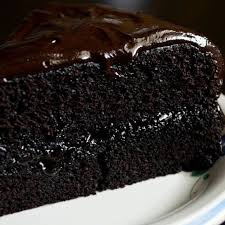

Double Chocolate Cake

This is the most fabulous chocolate cake that I've ever made," Ina Garten declared
when F&W ran her recipe in 2007. The buttermilk keeps the cake moist and light,
and the bit of coffee in the cake and frosting keeps the sweetness in check.
Ingredients
- 2 cups sugar
- 1 3/4 cups flour
- 3/4 cup cocoa
- 1 1/2 tsp baking powder
- 1 1/2 tsp baking soda
- 1 teaspoon salt
- 2 eggs
- 1 cup buttermilk
- 1/2 cup butter, melted
- 1 tbsp vanilla extract
- 1 cup hot coffee (or 1 cup boiling water)
Steps
- Preheat oven to 350 degrees. Grease three round baking pans and set aside. In
a large bowl, stir together sugar, flour, cocoa, baking powder, baking soda,
and salt. Add eggs, buttermilk, melted butter and vanilla extract; beat 2 minutes
on medium speed. Stir in hot coffee.
- Pour batter evenly between the three pans and bake on middle rack of oven for 30
to 35 minutes, until toothpick inserted in center comes out clean. Cool completely
on wire racks before frosting.